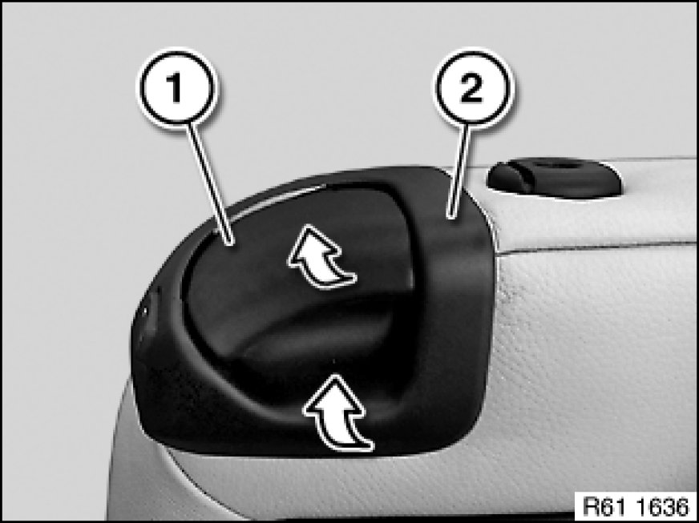
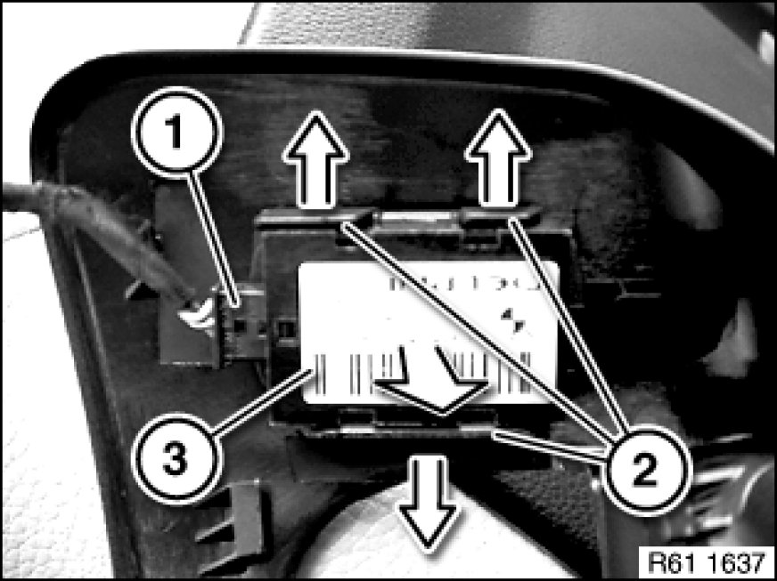

61 31 100 Removing and Installing/Replacing Switch for Longitudinal Seat adjustment
61 31 100 - Removing and installing/replacing switch for longitudinal seat adjustment

Raise release unit (1).
Unclip release unit trim (2) in direction of arrow and feed out of release unit (1).
Installation:
First feed release unit trim (2) at front into release unit (1), then clip into place in rear area.
Make sure release unit trim (2) is correctly engaged and seated on release unit (1).

Disconnect plug connection (1).
Unlock retaining tabs (2) in direction of arrow.
Remove switch for longitudinal seat adjustment (3) in direction of arrow.
Installation:
Switch for longitudinal seat adjustment (3) must snap audibly onto release unit trim.